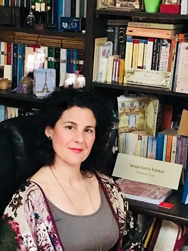
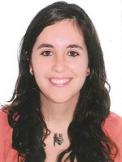

University of Alcala (UAH)
Tradition and innovation are combined in a university whose origins date back to 1499, the year of its foundation by the Regent of Spain, Cardinal Cisneros, as a very novel educational project. The UAH is one of the few universities in the world declared a "World Heritage Site" by UNESCO, with old buildings that have been rebuilt and used as Faculties. The University annually receives 16000 undergraduate students and 13000 graduate students. It has 2100 professors and researchers, 800 administrative and service workers and 140 Research Groups. It receives more than 6000 international students per year, which places Alcalá in the first place among Spanish universities in the internationalization ranking. The UAH is also included in the QS ranking "100 under 50" with a rating of five stars. The UAH offers a total of 38 bachelor's degrees, 46 master's degrees and 25 doctorates in five branches of knowledge: Arts and Humanities, Law and Social Sciences, Sciences, Health Sciences, Engineering and Architecture. UAH also offers an excellent service in teaching Spanish language through its office "Alcalingua". The UAH participates and has participated in a wide variety of projects funded by the EU and, particularly, in several Erasmus+ Strategic Partnerships (i.e #Europehome, #Empl-oi, OLA+, CAPQI, BEST+,...).
The UAH is the project coordinator and will be in charge of IO3 in the ErasmusX project. For more information, please visit us at: www.uah.es
UAH Team
Mercedes Burguillo Cuesta has a PhD in Economics from the University Autónoma de Madrid. She has been a professor at the European University of Madrid, the University of Valladolid and the Carlos III University. She is currently associate professor in the Department of Economics at the University of Alcalá. Her research is focused on the economic analysis of the use of energy and transport. She has participated in different research projects related to these topics and has published numerous international scientific articles on these issues. She also collaborates as reviewer in journals like, Transportation Research A, Transport Reviews, Transport Policy. Currently she is the editor of a Special Issue in the journal Research in Transportation Economics. She has received the award Campus de Excelencia Internacional “Energía Inteligente” of the University of Alcalá and the University Rey Juan Carlos in 2015.

Soraya García holds a Ph.D. in Modern Languages, Literature and Translation from Universidad de Alcalá and a M.A. from University of the West of England. She is a full-time Teacher Trainer, undergraduate and postgraduate lecturer in EAP, CLIL & TEFL Methodology, and current Degree Coordinator at UAH-Faculty of Education. She is involved in international research projects related to Online Teaching and competence development through ESP and TPACK by integrating technology, pedagogy and content knowledge in foreign language teaching.

Elisa Rojas is an Assistant Professor at the UAH. She holds a PhD in Information and Communication Technologies. As such, her field of expertise are ICTs and, in particular, communication networks. She is also the Erasmus+ coordinator at her department. She has previous experince in diverse FP7 and H2020 projects, also funded by the EC. Prior to joining the UAH, she worked for Telefónica I+D and as Chief Technical Officer of Telcaria (an ICT SME).